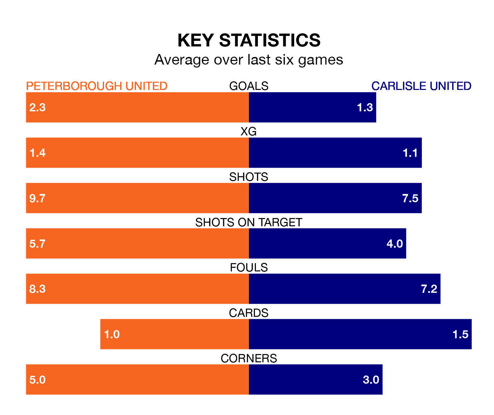

Struggling Peterborough United face Carlisle United at the Weston Homes Stadium on Friday looking to build on a win in their last league outing.
After securing all three points with a 0-1 victory over Portsmouth on March 16, the Posh sit fourth in EFL League One.
They travel to play a Carlisle side 24th in the standings, who were held in their last match, 2-2 against Stevenage, on March 23.
With 74 goals in 38 games so far this season, Peterborough are the league's highest scorers with 1.9 goals per game. And they are conceding fewer than average, letting in 46 goals at a rate of 1.2 per game.
Carlisle, meanwhile, are below average scorers, with 0.9 goals per game, compared to a league average of 1.3. They have conceded 1.8 goals per game.
Peterborough United are in fantastic form in EFL League One, with five wins and one loss from their last six games.
With a win and a draw over that period, Carlisle United's form is much worse – they have taken four points from 18, compared to the Posh's 15.
The hosts' Harrison Burrows is among the league's most creative players, racking up 11 assists in 38 appearances so far this season, and holding third spot in EFL League One's assist charts.
For the away team, Samuel Lavelle, Owen Moxon and Jack Robinson have set up the most goals, having laid on three assists apiece to date.
Updated: 12:16 (UTC), 25/03/24